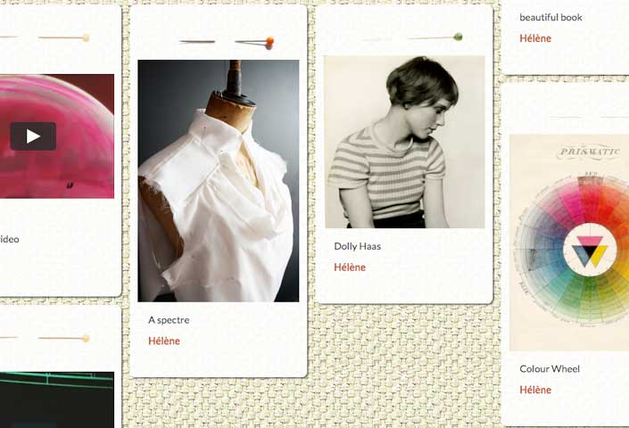
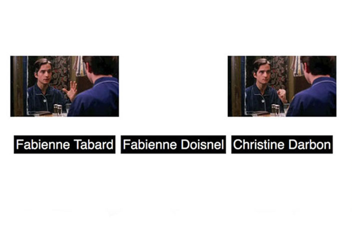
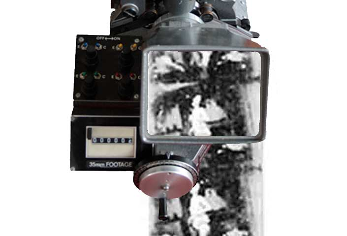

Embroidered QR sign for an exhibition in Rotterdam in 2014
Intertitles
Intertitle an animated text generator built on Rails (work in progress), speech to text API and voice synthesis

Epinglette, application built on Rails with Bootstrap and Isotope libraries, AWS, emulates Pinterest.

Asynchronous events based on Baisers Volés by François Truffaut(1969)

Film flicker is a digital simulation of the analogue illusion of motion while exposing the film device

Herman Slobbe, Blind Child, by Johan Van den Keuken(1966),screenreader dubbing Dutch to English

A visual aid for the number 9 multiplication table, built on Sinatra